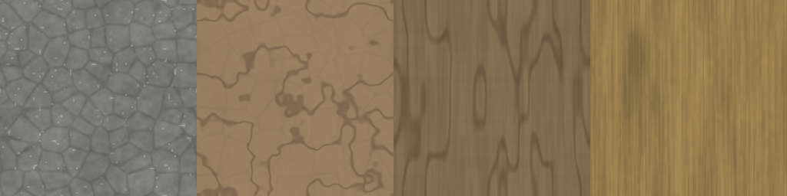
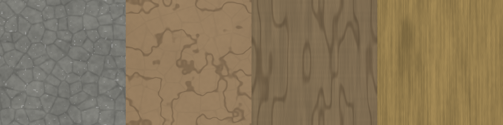
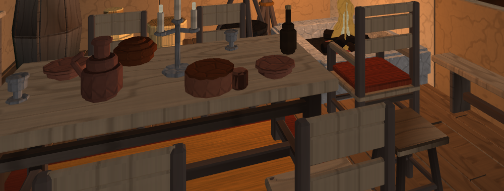
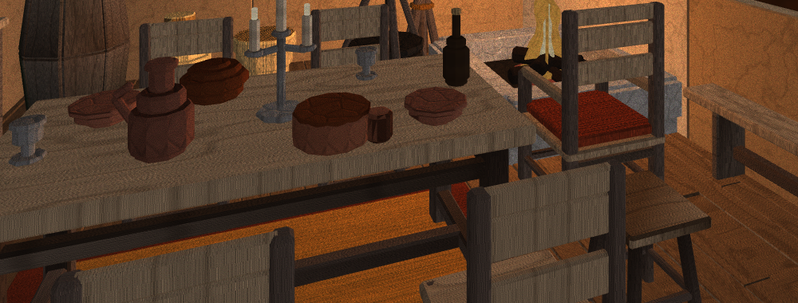
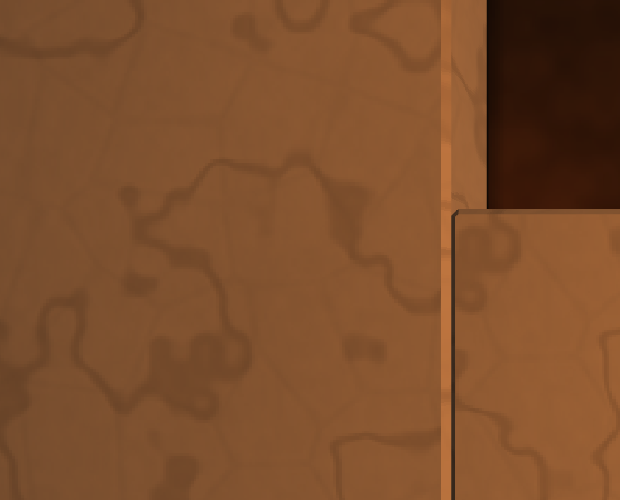
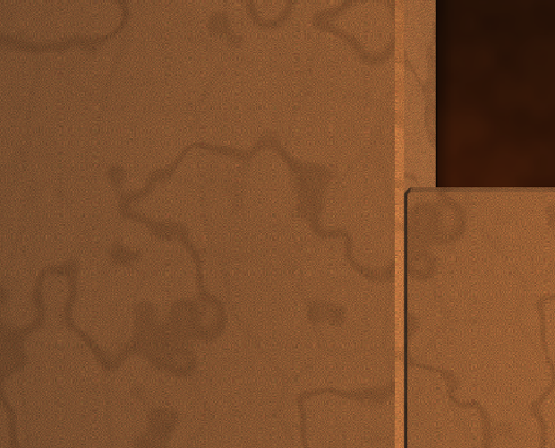
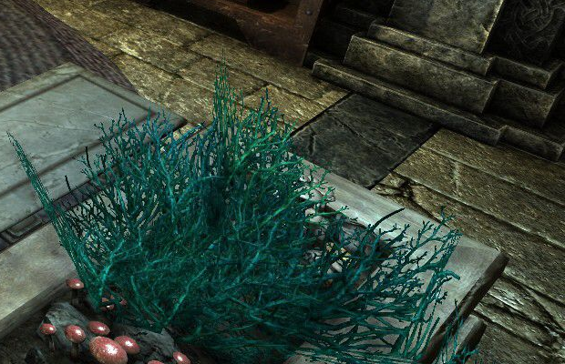
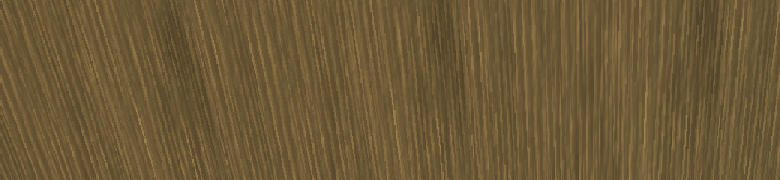
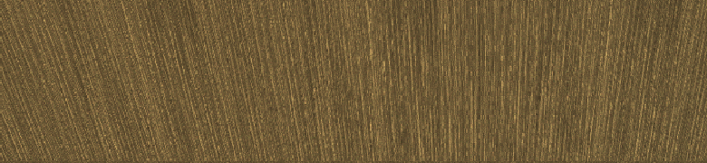
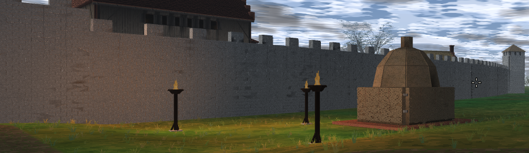

Волна 4 зоны МАТЕРИАЛЫ · 28.08.2026 · зерно на масштабе текселя,
плитка 512 px, доза DFN_MAT_SHEET · критерий К1 сдаётся
прибором tools/quality/measure_surface.py
Одной фразой. Владелец сказал «все текстуры плоские, идеально ровные, монотонных цветов», и все три слова оказались буквально измеримы на одном объекте — на процедурном листе набора. У всех тридцати шести его плиток ДЕТАЛЬ лежала между 0.12 и 1.80 при пороге К1 4.0: лист провалил бы критерий даже при отрисовке тексель-в-пиксель, то есть дело было не в разрешении, не в свете и не в кадре. Причина одна на все девять колонок — самая мелкая черта каждого вещества нарисована крупнее, чем она есть. После волны плитки несут 3.84–11.65, а на кадре стенда ДЕТАЛЬ поднялась 1.07 → 4.33 на столешнице, 1.29 → 4.07 на половице, 2.35 → 5.27 на камне очага, 1.97 → 6.20 на доске потолка и 0.25 → 4.22 на штукатурке с дистанции критерия в один метр.
Первое, что сделала волна, — померила сам лист, а не кадр. Мера та же, что у прибора (модуль отклонения яркости текселя от окрестности 3×3), но применённая на шаг раньше: кадр несёт ещё свет, дистанцию и фильтрацию, и пока лист не измерен отдельно, любое число про кадр объясняется чем угодно.
python3 tools/quality/measure_surface.py — прибор кадра (К1) // лист меряется тем же методом в наборе: tests/render/PartsAtlasTests.cpp, // tile_detail() — «прибор набора», случай «зерно ложится НА ТЕКСЕЛЬ»
НАХОДКА, ИЗ КОТОРОЙ ВЫШЛА ВСЯ ВОЛНА. Единственная колонка листа, нарисованная в СВОЁМ настоящем шаге, — СОЛОМА: её шапка прямо говорит «стебель ржи 6–9 мм, поэтому 120 стеблей на метр — это счёт, а не вкус». И она же — единственная колонка с ДЕТАЛЬЮ выше 1.5 (1.80). Все остальные рисовали структуру вещества на порядок крупнее натуры:
| колонка | что рисовала | наш шаг | настоящий шаг |
|---|---|---|---|
| брус, доска | волокно | 26–34 линии/м = 3 см | 0.5–2 мм |
| камень | зерно, скол | 30/м = 3.3 см | 0.5–3 мм |
| штукатурка | зуб тёрки | 44/м = 2.3 см | 0.5–1 мм |
| обожжённая глина | песок в черепке | 40/м = 2.5 см | 0.3–1 мм |
| солома | стебель | 120/м = 8 мм | 6–9 мм |
То есть лист рисовал ФОРМУ каждого вещества и не рисовал его ЗЕРНО, и совпадение «единственная честная по шагу колонка = единственная недоплоская» — не совпадение.
Все поля листа строятся из tileable_fbm и
tileable_cells, а обе интерполируют между узлами решётки.
Значит любое их значение гладко на масштабе текселя, сколько бы октав им
ни дали, и поднятие частоты не помогает: октава с периодом в два текселя после
квинтической прокладки превращается в пандус, а пандус — ровно то, чего мера
ДЕТАЛЬ не видит по построению (модуль отклонения от окрестности у линейного
поля равен нулю). Поэтому в ProcTexture заведён единственный
недостающий примитив — lattice_hash01(), решётка без
интерполяции, — и он выведен наружу, а не скопирован в набор: вторая цепочка
хэшей в дереве была бы теневым дефектом правила 39 и молча сломала бы всякое
утверждение о детерминизме.
Замерено, а не выбрано. Экран FullHD при CAMERA_FOV_Y
(1.309 рад) несёт 703.5 пикселя на метр поверхности с одного метра —
с той самой дистанции, на которой К1 и меряется:
1080 / (2·tan(FOV/2)·1 м). Плитка 256 px на метровый шаг
даёт 256 текселей на метр, то есть увеличение в 2.75 раза.
Билинейная растяжка в 2.75 раза режет локальную детальность в 6.2 раза (замер: белый шум разных амплитуд, растянутый билинейно и померенный тем же прибором). Отсюда приговор плитке 256:
| шум амплитуды σ | ДЕТАЛЬ в плитке | на кадре, ×1.37 (512 px) | на кадре, ×2.75 (256 px) |
|---|---|---|---|
| σ = 8 | 5.99 | 2.66 | 0.97 |
| σ = 12 | 9.01 | 4.01 | 1.45 |
| σ = 20 | 15.12 | 6.71 | 2.43 |
| σ = 32 | 24.09 | 10.70 | 3.88 |
ПРИ ПЛИТКЕ 256 px КРИТЕРИЙ НЕДОСТИЖИМ НИКАКИМ ИСКУССТВОМ. Даже белый шум амплитуды 32/255 — текстура, которую никто не назовёт материалом, с ДЕТАЛЬЮ 24 в самой плитке, — приходит на кадр как 3.88 при пороге 4.0. Это и есть ответ на вопрос ТЗ «замерь текселей на метр против референса»: наши 2.56 px/см были ВНУТРИ референсной полосы Skyrim (2–4 px/см), и полоса всё равно не спасала — потому что у эталона поверхность в кадре обычно дальше метра и текстура УМЕНЬШАЕТСЯ, а условие К1 (один метр) — самое злое из возможных.
512 px дают тексель 1.95 мм (было 3.9), увеличение 1.37 и потерю в 2.25 раза — достижимо честной структурой. Ниже миллиметра-двух опускаться незачем и нечем: зерно всякого вещества набора (минеральное 0.5–3 мм, волокно 0.5–2 мм, песок 0.5–1 мм) частью лежит ниже Найквиста плитки, и такая структура ОБЯЗАНА выглядеть шумом — именно так её несёт всякая снятая с натуры текстура.
Колоночные функции листа (форма вещества) не тронуты ни строкой. Зерно кладётся общим шагом поверх них, множителем с нулевым средним, и отличается по веществам только количеством — таблица, а не ветки:
| вещество | зерно значения | волокно | длина волокна | разброс цвета | доля в рельеф |
|---|---|---|---|---|---|
| тёсаный брус | 0.140 | 0.250 | ×12 | 0.075 | 0.55 |
| пилёная доска | 0.130 | 0.235 | ×16 | 0.070 | 0.55 |
| торец | 0.165 | 0.145 | ×4 | 0.075 | 0.55 |
| камень | 0.225 | 0.060 | ×2 | 0.090 | 0.60 |
| обожжённая глина | 0.240 | 0.060 | ×2 | 0.120 | 0.55 |
| штукатурка | 0.215 | 0.055 | ×2 | 0.085 | 0.50 |
| солома | 0.140 | 0.230 | ×10 | 0.070 | 0.50 |
| дёрн | 0.180 | 0.235 | ×6 | 0.120 | 0.50 |
| глухое окно | 0 | 0 | — | 0 | 0 |
rgb = base·(a + b·h)), то есть была одномерной лестницей одного
тона, и прибор это видел: цветность 1.3–10.7 на 1000 пикселей при пороге К3
200. «Монотонных цветов» владельца — измеренная величина, а не впечатление.ГЛАДКОЕ ВЕЩЕСТВО ЗЕРНА НЕ ПОЛУЧАЕТ ВОВСЕ, И ЭТО УТВЕРЖДЕНИЕ, А НЕ
НЕДОДЕЛКА. Расхождение Р1 (MATERIALS.md §0.2): гладкое судится ПОВЕДЕНИЕМ
БЛИКА, а не К1, и исполнитель, который добавит зерна в стекло ради красного
числа, получит шершавое стекло и назовёт это успехом. У листа гладкая колонка
одна — Pane, — и на неё заведён отдельный случай набора: её плитка
при обеих дозах совпадает до последнего бита.
ДЕТАЛЬ плитки, доза 0 (256 px) → доза 1 (512 px). Все четыре ряда каждой колонки. Средняя яркость плитки не сдвинулась ни на десятую — это и есть проверяемое обещание «рисунок меняет ПОВЕРХНОСТЬ, а не палитру принятой витрины»: зерно кладётся множителем с нулевым средним.
| колонка | Light | Mid | Dark | Weathered |
|---|---|---|---|---|
| тёсаный брус | 0.423 → 9.32 | 0.398 → 8.42 | 0.271 → 5.20 | 0.452 → 10.11 |
| пилёная доска | 0.688 → 9.58 | 0.664 → 8.59 | 0.451 → 5.48 | 0.658 → 8.11 |
| торец | 0.627 → 7.62 | 0.741 → 7.14 | 0.562 → 4.59 | 1.035 → 8.24 |
| камень | 1.196 → 8.48 | 1.050 → 7.57 | 0.824 → 6.01 | 1.126 → 9.01 |
| обожжённая глина | 0.772 → 4.73 | 0.707 → 4.69 | 0.548 → 3.84 | 0.878 → 6.94 |
| штукатурка | 0.533 → 9.18 | 0.584 → 7.61 | 0.602 → 6.85 | 1.123 → 11.35 |
| солома | 1.798 → 10.81 | 1.519 → 10.04 | 1.128 → 8.13 | 1.299 → 11.65 |
| дёрн | 0.602 → 9.08 | 0.503 → 8.15 | 0.383 → 6.54 | 0.475 → 9.76 |
| глухое окно | 0.170 → 0.126 | 0.146 → 0.094 | 0.117 → 0.072 | 0.148 → 0.096 |
У глухого окна число ПАДАЕТ, и это верно: зерна ему не добавлено ни на бит, а плитка стала вдвое подробнее — та же гладкая картинка на вдвое меньшем текселе даёт меньшее отклонение от окрестности. Сравнение при ОДНОЙ стороне плитки даёт точное равенство, и на нём стоит случай набора.


УСЛОВИЕ, БЕЗ КОТОРОГО ЭТИ ЧИСЛА НИЧЕГО НЕ ЗНАЧАТ (правило 47): обе
руки каждой пары сняты ОДНИМ двоичным файлом, с ОДНОЙ камеры, через ОДНУ
дозу. Единственное различие внутри пары — DFN_MAT_SHEET.
Стенд детерминирован: два прогона дозы 1 дали побитово одинаковый кадр
(md5 9500e46fb30c16b57ee98029de8010ae дважды).
DFN_MENU=0 DFN_OPEN_MAP=interiors/furniture-room DFN_MAT_SHEET=<0|1> \ DFN_CAPTURE_AFTER_FRAMES=90 DFN_CAPTURE_DIR=<dir> ./build_sheet/engine/app/dfn_app
Кадр приводится к FullHD без масштабирования: снимок бэкбуфера идёт 2560×1440, и это ТОЧНО обратимо — бэкенд растягивает внутреннюю сетку 1920×1080 ближайшим соседом (проверено: ровно 640 из 2559 соседних столбцов — дубликаты, то есть 2560−1920), поэтому первый столбец каждого повтора восстанавливает исходный пиксель без интерполяции. Требование ТЗ «кадр FullHD БЕЗ масштабирования» выполнено буквально, а не «примерно».
| часть (вещество) | дистанция | К1 ДЕТАЛЬ до | после | порог | К2 энтропия | К3 цветность |
|---|---|---|---|---|---|---|
| доска потолка (пилёная доска) | ≈2.5 м | 1.974 | 6.202 | 4.0 | 5.180 → 5.958 | 35 → 260 |
| камень очага (камень) | ≈3 м | 2.350 | 5.271 | 4.0 | 5.243 → 5.729 | 72 → 263 |
| столешница (тёсаный брус) | ≈1.2 м | 1.072 | 4.333 | 4.0 | 5.279 → 6.007 | 69 → 334 |
| половица (пилёная доска) | ≈2 м | 1.287 | 4.071 | 4.0 | 5.083 → 5.637 | 63 → 249 |
| стена (штукатурка) | ≈3.5 м | 0.327 | 2.932 | 4.0 | 4.322 → 4.854 | 15 → 113 |
К1 объявлен на дистанции 1 м (§0.2). Отдельная пара с камеры, поставленной в метре от стены той же комнаты:
| часть | дистанция | ДЕТАЛЬ до | после | порог |
|---|---|---|---|---|
| штукатурка стены | 1.0 м | 0.253 | 4.216 | 4.0 |
DFN_MENU=0 DFN_EDITOR=1 DFN_OPEN_MAP=interiors/furniture-room \ DFN_EDITOR_CAM=127.2,26.4,140.0,0,0 DFN_MAT_SHEET=<0|1> \ DFN_CAPTURE_AFTER_FRAMES=90 DFN_CAPTURE_DIR=<dir> ./build_sheet/engine/app/dfn_app
И честно про то, чего это НЕ значит. Та же штукатурка с трёх с половиной метров даёт 2.932 — красное число. Это не лист: с полутора метров и дальше плитка УМЕНЬШАЕТСЯ, и зерно усредняется тем же трактом, который его рисует. Штукатурка — худший случай набора и здесь, и в исходном замере ресёрчера (0.52 — их нижняя граница). См. §9, хвост 1.
| часть | ДЕТАЛЬ до | после | К3 цветность |
|---|---|---|---|
| солома кровли | 4.016 | 9.980 | 8 → 159 |
Солома была зелёной и ДО волны, единственная из всех, — и это подтверждение диагноза §1 кадром, а не рассуждением: колонка, нарисованная в своём настоящем шаге, проходила критерий уже вчера.
| часть | дистанция | ДЕТАЛЬ до | после | К3 |
|---|---|---|---|---|
| крепостная стена (камень) | ≈30 м | 3.216 | 5.455 | 72 → 284 |
ЭТО ЗЕЛЁНОЕ ЧИСЛО — УЛИКА, А НЕ ПОБЕДА, и она названа здесь, а не в хвосте. Стена в тридцати метрах читает 5.455 — БОЛЬШЕ, чем тот же камень очага в трёх (5.271). Правильно отфильтрованная текстура не может набирать детальность с расстоянием; этот излишек — алиасинг, а в движении он будет мерцанием. Причина найдена в коде и названа в хвосте 2: непрозрачные текстуры создаются без цепочки мипов, а плитки набора непрозрачны по контракту (правило 52). Город здесь — предупреждение, а не приёмка; приёмка волны стоит на стенде.





images_examples/houses_indoors/image copy 10.png,
вырезка 1:1, без масштабирования). Полоса ДЕТАЛИ по всем девятнадцати скринам
при яркости участка 40–80 (той же, что у нашего стенда): медиана
4.59, верхняя четверть 6.13; относительная детальность
(ДЕТАЛЬ/яркость) — медиана 8.1 %. Наш стенд до волны давал
0.6–5.3 %, после — 5.3–7.8 %.


| доза 0 | доза 1 | чем измерено | |
|---|---|---|---|
| сторона плитки | 256 px | 512 px | parts_tile_px() |
| тексель на объекте | 3.91 мм | 1.95 мм | шаг повтора 1.00 м |
| текселей на сантиметр | 2.56 | 5.12 | референс Skyrim 2–4 |
| увеличение на экране с 1 м | ×2.75 | ×1.37 | 703.5 px/м при FullHD и CAMERA_FOV_Y |
| лист целиком | 2304×1024 = 9.44 МБ | 4608×2048 = 37.75 МБ | RGBA8 |
| два листа (цвет + нормали), CPU | 18.9 МБ | 75.5 МБ | временно: освобождаются в shutdown() |
| одна плитка на GPU | 0.26 МБ | 1.05 МБ | по одной на пару (вещество, тон) × лист |
| комната стенда на GPU | ≈3.1 МБ | ≈12.6 МБ | 6 пар × 2 листа |
| печать обоих листов | 0.68 с | 2.73 с | замер на этой машине, RelWithDebInfo |
Печать — один раз на процесс, лениво: карта без построек не платит ничего, первый дом карты платит целиком. Два с лишним лишних секунды на загрузке — самая дорогая строка волны, и она названа хвостом 3.
Лист процедурный и печётся при загрузке. В .dfo лежат не
пиксели, а пара ординалов (поверхность, тон) плюс — с волны 3 — ИМЯ вещества;
плитка в файл не входит и в его личность не входит. Поэтому полка убранства
(2618 файлов) и полка деталей не тронуты ни байтом, перепекать нечего и
некому.
Она равна нулю для всех, кроме первого дома карты, и вот почему.
Ревизия входит ровно в один ключ — proc_key кэша плиток внутри
RenderSystem, который живёт в памяти процесса и умирает вместе с
ним. Дискового кэша, ключом которого была бы ревизия, в дереве нет
(проверено grep: читателей у константы двое — RenderSystem.cpp
и FlamePhaseTests.cpp). Значит подъём ревизии не обесценивает
ничей кэш на диске, а стоит одной лишней печати листа за запуск — той самой
секунды из таблицы выше. Дефект 1.5.2 ТЗ (ревизия не пишется в
.dfo) этой волной не тронут и остаётся открытым.
DFN_MAT_SHEET — 104-я дверь (счёт пересчитан
grep -c '^ {"DFN_' по строкам таблицы, а не прибавлен к
запомненной: в тот же час в дереве лежала чужая некоммиченная строка).
Доза едет ПАРАМЕТРОМ генератора, а не переменной среды, и это не
аккуратность: обе дозы обязаны печататься в одном процессе, иначе случай
«доза 0 не сдвинулась ни на байт» нечем написать. Переменную читает
RenderSystem::parts_sheet_dose() — единственное место, где
она читается (правило 39): свотчи материала в редакторе пекутся из того же
листа, что носят стены, и второе чтение двери развело бы их в первый же день.
Pane
при обеих дозах совпадает точно (расхождение Р1);parts_tile_base.ЧЕГО ЗДЕСЬ НЕТ И ПОЧЕМУ. Волна 3 доказывала «доза 0 — кадр бит-в-бит»
хэшем кадра. Здесь такого доказательства нет, и подделывать его нельзя.
Кадр дозы 0, снятый до правок этой волны, и кадр дозы 0 после неё
не совпадают по md5 — но не из-за листа: между двумя прогонами в общем
дереве приземлились чужие волны (App.cpp, AppAfterFrame,
поза и камера), и двоичный файл сменился под руками. Что можно утверждать
честно: по всем пяти участкам стенда доза 0 до и после правки расходится не
более чем на 0.7 % (0.326/0.327, 1.978/1.974, 2.337/2.350,
1.265/1.287, 1.074/1.072), а побитовость дозы 0 на уровне листа доказана
случаем набора. Ровно та ловушка правила 47, из-за которой оно и дополнялось:
две руки из разных сборок дают правдоподобную разницу.
cmake -G Ninja -S . -B build_sheet -DCMAKE_BUILD_TYPE=RelWithDebInfo \ -DCMAKE_CXX_COMPILER=/opt/homebrew/opt/llvm/bin/clang++ ... ninja -C build_sheet && ctest --test-dir build_sheet -E sim_tunnel_walk python3 tools/check_commit_builds.py --sha HEAD --build-dir build_sheet
ctest: 131 из 133 запущенных зелёные (в наборе 135; sim_tunnel_walk
исключён по указанию задачи — краснеет под нагрузкой и гоняется одиночно,
test_house_lod — тест соседней волны, чей двоичный файл в этом
дереве ещё не собран, «Not Run»). Застава
check_commit_builds.py на этом коммите: 37 TU чисты.
ДВЕ КРАСНЫЕ РУКИ, КОТОРЫЕ ОКАЗАЛИСЬ НЕ МОИМИ, И КАК ЭТО ПРОВЕРЕНО.
frame_determinism_stand и frame_determinism_city в
полном прогоне упали с «73.5 % пикселей врозь». Это ХОЛОДНЫЙ КЭШ СВЕЖЕГО
КАТАЛОГА СБОРКИ, а не поверхность: обе руки берут карту БЕЗ ПОСТРОЕК
(trees/forest-v2), где лист набора не печатается вовсе, и на
повторном прогоне (кэш прогрет) обе зелёные. Доказано вторым бинарником:
build_lead/engine/app/dfn_app, собранный до этой волны, даёт
99787a35da59c707ce5deef5332f1775, и ровно этот же хэш даёт
build_sheet после моего коммита — то есть кадр рощи не сдвинулся
ни на бит. Названо здесь, а не в хвосте, потому что «красное в моём прогоне»
обязано быть объяснено, а не пересказано.
BgfxRenderer::create_texture строит цепочку мипов
только для текстур с прозрачностью (ветка has_alpha); непрозрачные
идут createTexture2D(..., false, 1, ...), а плитки набора
непрозрачны по контракту (правило 52: прозрачный тексель здесь — дыра в стене).
Улика измерена и приведена в §5: стена в 30 м читает 5.455 против 5.271 у
того же камня в трёх. Цена починки: флаг mipped у
IRenderer::create_texture со значением по умолчанию, оставляющим
всех сегодняшних вызывающих побитово прежними, плюс уже написанный рядом
строитель мипов. Почему не сделано: интерфейс общий, и в те же часы три
волны правили файлы платформы; правка вслепую стоила бы дороже находки.
Рекомендация: не включать DFN_MAT_SHEET по умолчанию, пока
это не закрыто.span_m так и не доезжает до отрисовки. Волна 3 положила
его и в запись реестра, и в .dfo v4 (секция MTRL), а
читателя у HouseSubmesh::span_m нет ни одного (проверено
grep по дереву). Цена: u_matParams.z (два
слота свободны) заполняется в BgfxRendererSubmit из той же записи
реестра, которую он уже читает ради шероховатости, и три места
fract(v_texcoord0) в fs_prop.sc множатся на него.
Что это даёт, числом: у соломы в реестре объявлен
span_m = 0.55, то есть её плотность стала бы 512/0.55 =
931 тексель на метр — один к одному с экраном на дистанции критерия —
без единого лишнего байта памяти и без перепечки геометрии. Не сделано:
закрытие по кратчайшему пути.| файл | что |
|---|---|
engine/render/sources/ProcTexture.{h,cpp} | lattice_hash01() — решётка без интерполяции |
engine/render/sources/PartsAtlas.h | PartsSheetDose, PARTS_ATLAS_TILE_PX_GRAIN, parts_tile_px(), ревизия 4 |
engine/render/sources/PartsAtlas.cpp | зерно, волокно, разброс цвета, таблица по веществам |
engine/render/sources/RenderSystem.{h,cpp} | parts_sheet_dose(); сторона плитки берётся у дозы и входит в ключ кэша |
engine/app/sources/AppDoors.cpp | дверь DFN_MAT_SHEET (103 → 104) |
engine/app/sources/AppHouse.cpp | свотчи редактора пекутся той же дозой |
tests/render/PartsAtlasTests.cpp | четыре случая на дозу + «прибор набора» tile_detail() |